What the app draws while it waits
Every loading surface in the client, photographed from the client's own code:
server/client/src/loading.js drew each one, the client's stylesheets sized it,
and the veil, the nav and the sheet are the markup from server/client/template.html.
Regenerate with node docs/loading-surfaces/build.mjs — see
README.md for what is real in these pictures, what is stand-in art,
and what a still cannot show.
15 surfaces · animations held at 700ms so two runs look the same.

First paint — the boot veil
Drawn by template.html before the catalog has answered, and lifted by boot.js (on the catalog, or on a 15-second timer so a dead network cannot leave a screen with no way in).
| veil | 1200×760 |
|---|---|
| coversViewport | true |
| zIndex | 40000 |
| mark | 1 |
| bar | boot-bar |
| animations | 2 |

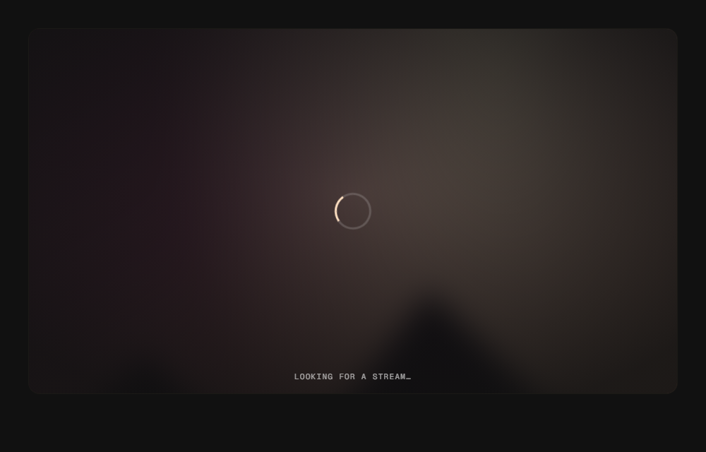
Films — looking for a stream
The stage an embed will play on, at the size it will be, with the title’s own cover blurred behind the ring. This is the caption movies.js mounts with.
| stage | 918×516 |
|---|---|
| ratio | 1.78 |
| caption | Looking for a stream… |
| backdrop | blur(22px) saturate(0.85) brightness(0.42) |
| backdropDecoded | true |
| ring | spin |
| skeletons | 0 |
| animations | 1 |

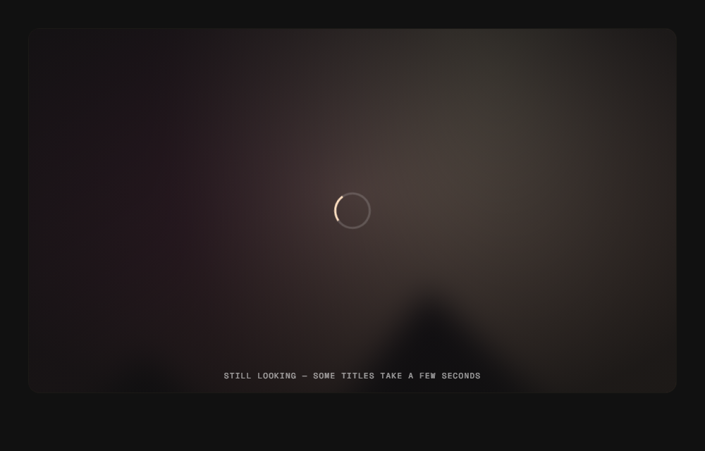
Films — still looking, after four seconds
The same stage after stageStillLooking() has fired. The caption is the app telling the truth about a slow title instead of an animation that looks the same working or stuck.
| stage | 918×516 |
|---|---|
| ratio | 1.78 |
| caption | Still looking — some titles take a few seconds |
| backdrop | blur(22px) saturate(0.85) brightness(0.42) |
| backdropDecoded | true |
| ring | spin |
| skeletons | 0 |
| animations | 1 |

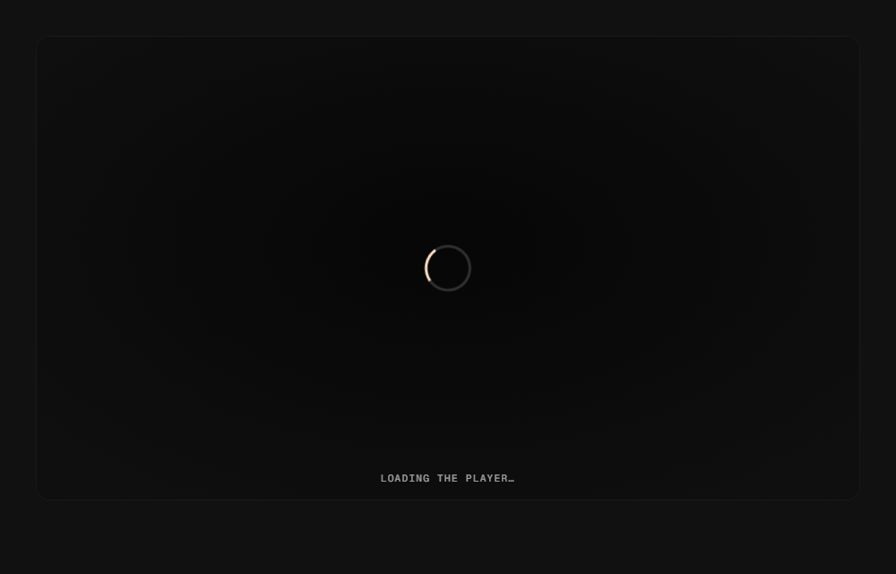
A stage with no cover to put behind it
The supported empty state: the same 16:9 stage, no poster (data-empty), so an embed area with no cover yet still gets the stage rather than an empty page.
| stage | 918×516 |
|---|---|
| ratio | 1.78 |
| caption | Loading the player… |
| backdrop | none |
| backdropDecoded | false |
| ring | spin |
| skeletons | 0 |
| animations | 1 |

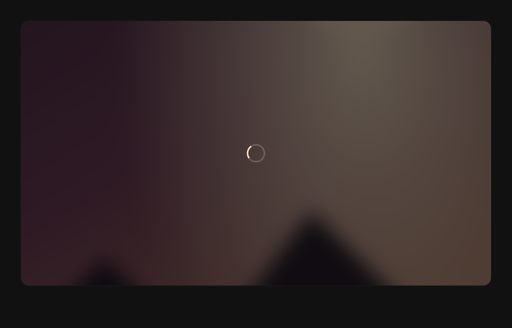
A video that has not drawn a frame
The overlay sits over the <video> from the moment a source is attached (attach() calls veilOn()), and leaves on canplay. waiting/stalled and a quality switch bring it back.
| video | {"w":918,"h":516} |
|---|---|
| slot | {"w":918,"h":516} |
| overlay | {"w":918,"h":516} |
| overlayVisible | true |
| backdrop | blur(20px) saturate(0.85) brightness(0.4) |
| backdropDecoded | true |
| ring | spin |
| animations | 1 |

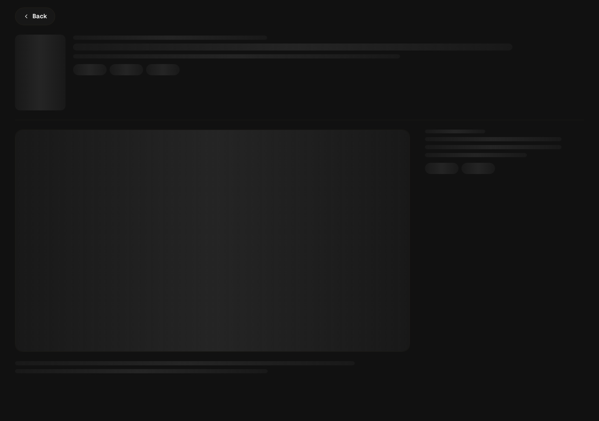
Detail sheet — the page it is about to become
openSheet() draws sheetSkeleton() before the record is fetched: the real page’s own .detail-hero / .detail-grid / .player-card, with bars where the text will be and a 16:9 stage where the player will be, so nothing moves when the record lands.
| sheetOpen | true |
|---|---|
| body | {"w":1216,"h":728} |
| columns | 844px 340px |
| bars | 9 |
| skeletons | 16 |
| poster | {"w":108,"h":162} |
| stage | {"w":842,"h":474} |
| stageRatio | 1.78 |
| animations | 17 |

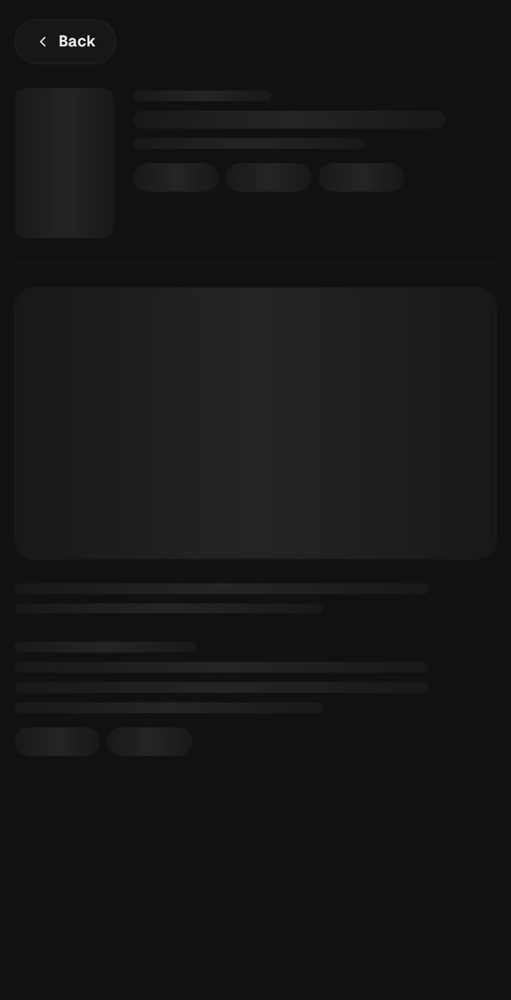
Detail sheet on a phone
The same skeleton at phone width: one column, the stage full width, the poster at its small size. The shape follows the layout because it is built from it.
| body | {"w":406,"h":565} |
|---|---|
| columns | 406px |
| poster | {"w":84,"h":126} |
| stage | {"w":404,"h":227} |
| animations | 17 |

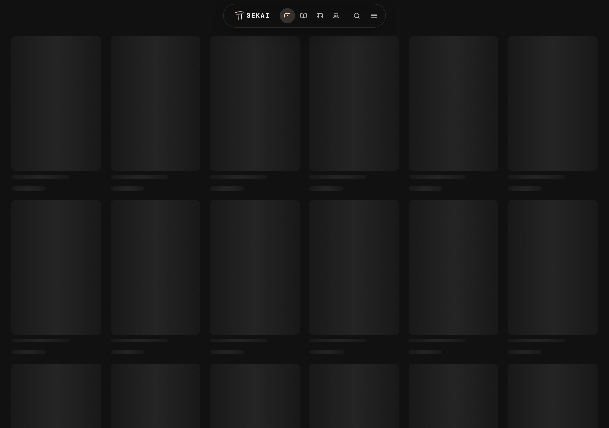
The catalog grid — cards where cards are going
data.js fills #grid with skeletonCards(18) on first load and on every page turn past the first, in the grid’s own container and under the real nav, so the layout holds through the fetch.
| cards | 18 |
|---|---|
| skeletons | 54 |
| columns | 6 |
| firstCard | {"w":189,"h":325} |
| firstPoster | {"w":189,"h":283} |
| nav | 1 |
| animations | 56 |

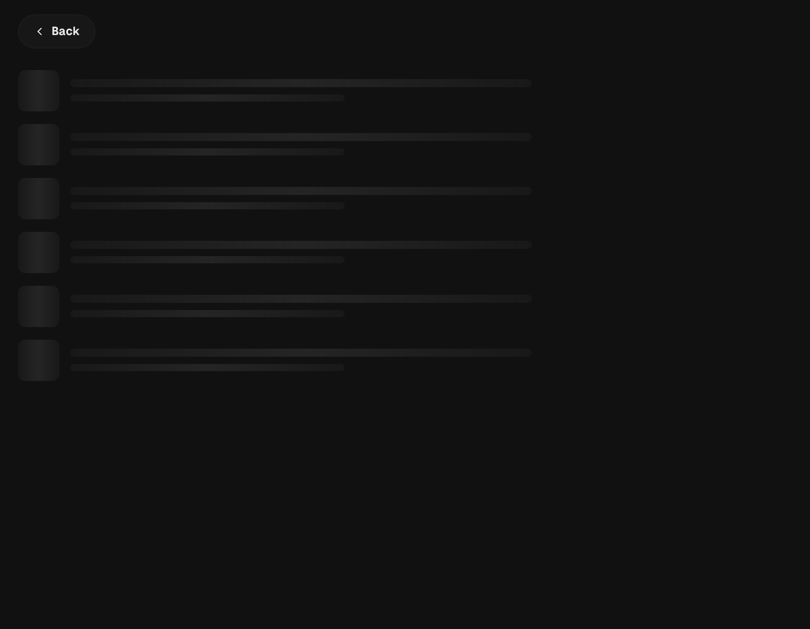
A playlist — rows where rows are going
Open a playlist or a public shelf and openSheet() uses listSkeleton(): square art, two text bars, six rows, in the sheet that will hold the real rows.
| rows | 6 |
|---|---|
| squares | 6 |
| firstRow | {"w":860,"h":46} |
| sheetOpen | true |
| animations | 19 |

The manga reader — pages on their way
A chapter’s pages before any has arrived: page-shaped strips carrying .rd-page, so they inherit the reader’s layout (measured 2:3 here, the shape of a page).
| pages | 3 |
|---|---|
| strips | 3 |
| page | {"w":430,"h":645} |
| pageRatio | 0.67 |
| layout | strip |
| readerChromeHidden | none |
| animations | 4 |

The reader skeleton in a two-page layout
The same strips with data-layout="double": two pages across because the reader is set that way. The skeleton does not impose a layout of its own.
| pages | 4 |
|---|---|
| firstTwo | [{"x":0,"w":380,"h":840},{"x":380,"w":380,"h":840}] |
| sideBySide | true |
| animations | 5 |

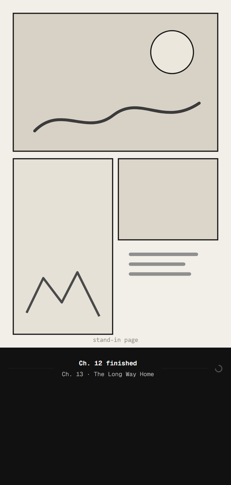
The seam between chapters
Reading on: the band names the chapter that finished and the one that is starting, and while the next chapter’s pages are on their way it carries a ring — the one loading state here that is still a spinner rather than the shape of what is coming.
| seam | {"w":430,"h":78} |
|---|---|
| loading | true |
| rules | 2 |
| finished | Ch. 12 finished |
| starting | Ch. 13 · The Long Way Home |
| ring | rd-spin |
| animations | 2 |

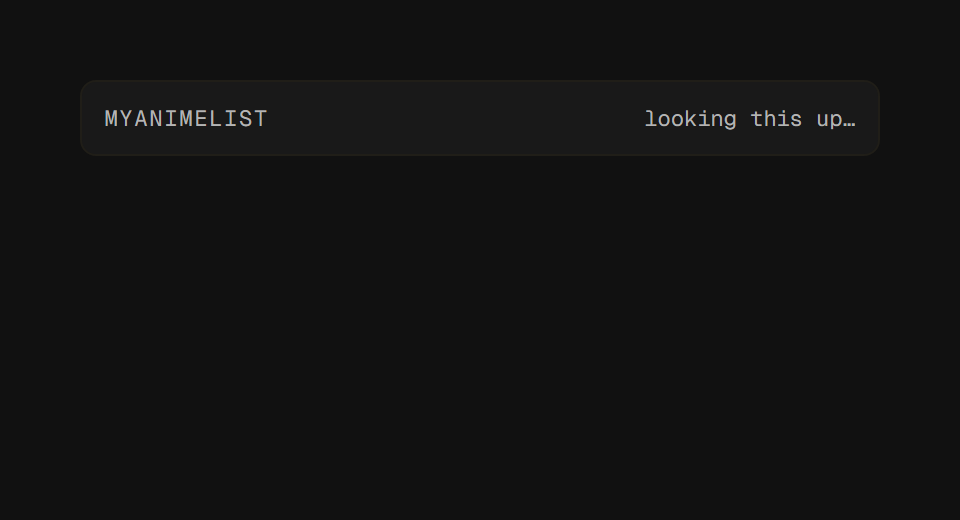
A tracking box waiting on MyAnimeList
The last word-only state in the app: fillMalSlot() draws a head with “looking this up…”, with no shape to say what is coming. Photographed as it is, not as it should be.
| box | {"w":400,"h":38} |
|---|---|
| state | loading |
| entry | looking this up… |
| heads | 1 |
| skeletons | 0 |
| animations | 0 |

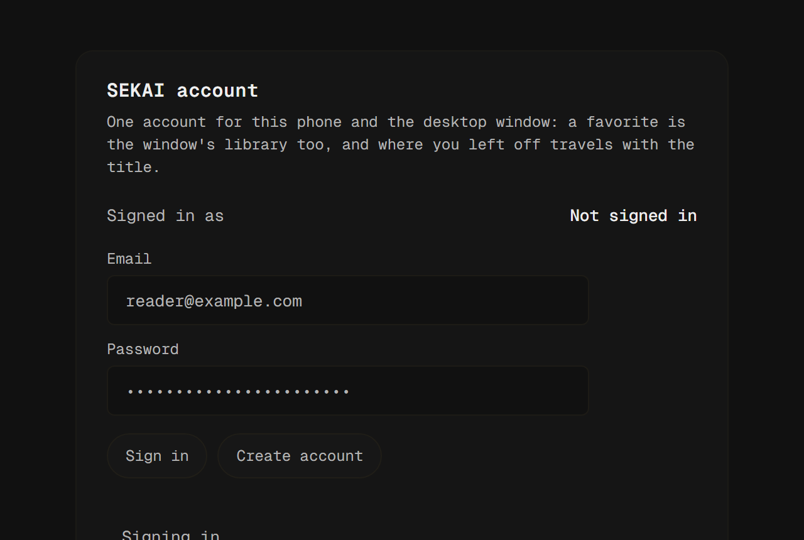
Signing in, in the account card
account.js disables both buttons and writes one line — “Signing in…”, “Creating the account…”, “Syncing…” — and that is the whole of it. The card is the shipped markup; the row, the disabled buttons and the note are what busy(true) and accountNote() leave on screen. The typed address is a stand-in.
| card | {"w":520,"h":444} |
|---|---|
| who | Not signed in |
| note | Signing in… |
| disabledButtons | 2 |
| skeletons | 0 |
| ring | |
| animations | 0 |

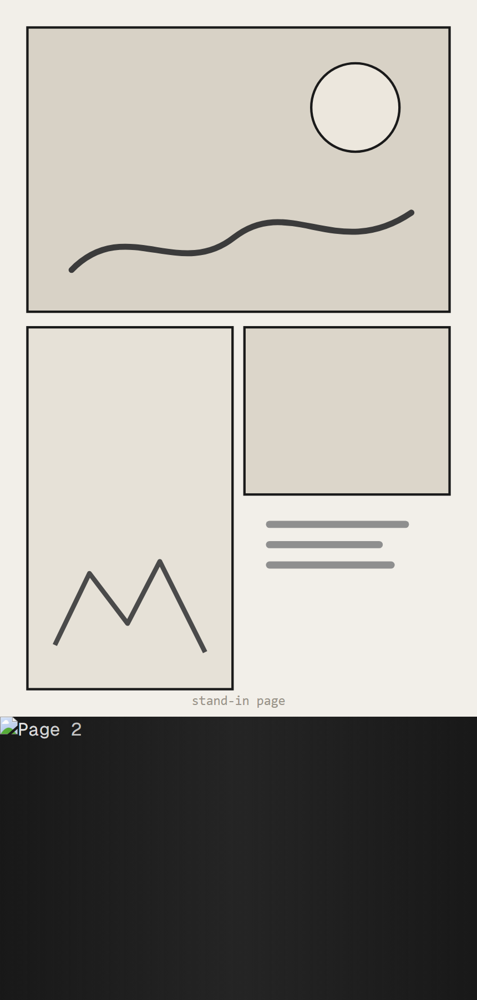
A page that has not decoded yet
Chapter pages arrive one at a time. Every <img class="rd-page" data-pending="true"> is a page-shaped shimmer until it loads and boot.js takes the mark off — one decoded page and two still pending here.
| pages | 3 |
|---|---|
| pending | 2 |
| decoded | 1 |
| page | {"w":430,"h":270} |
| animations | 3 |